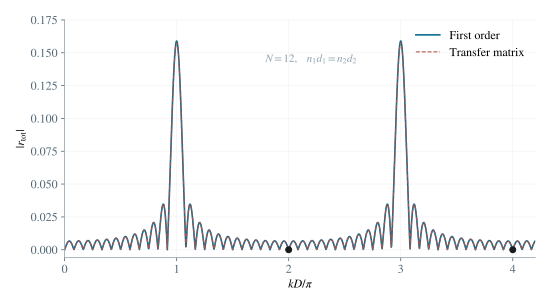

2.1 以界面连续条件求单界面系数
将入射振幅归一化为 1。与 e−iωt 的时间约定相配，向右传播用 einkx，向左传播用 e−inkx。于是
E(x)={ein1kx+re−in1kx,tein2kx,x<0,x>0. （1）在 x=0 处，场及导数的连续条件分别给出 1+r=t 与 in1k(1−r)=in2kt。消去 t，得到
r12=n1+n2n1−n2,t12=n1+n22n1. （2）交换左右介质，得到 r21=−r12 与 t21=2n2/(n1+n2)。振幅系数并不是能量份额。能流反射率与透射率为
R=∣r12∣2,T=n1n2∣t12∣2,R+T=1. （3）最后一个等式可直接代入验证，也检验了振幅归一化是否一致。
2.2 识别一阶反射路径与往返相位
记空间周期 a=d1+d2，一个周期的光程 D=n1d1+n2d2，并令 r0=δn/(n1+n2)。第 p 个周期（p=0,…,N−1）包含两个界面：在 x=pa 处有 n1→n2 的反射 +r0，在 x=pa+d2 处有 n2→n1 的反射 −r0。
一次完整穿越一对界面的透射因子为 t12t21=1−r02，在一阶中可取 1。一次反射路径的振幅已经是 r0 的一阶；再次往返所需的额外反射会贡献更高阶。因此只需将各界面单次反射的复振幅相加。
rp=r0e2ikpD−r0e2ik(pD+n2d2)=r0(1−e2ikn2d2)e2ikpD. （4）相位中的因子 2 来自到达反射面并返回 x=0 的往返光程。同一周期两个界面的反射符号相反，不能只计算它们的传播相位。
2.3 求和得到结构因子与周期干涉因子
将 N 个周期的贡献按复振幅求和，用等比数列公式，得到一阶反射振幅
rtot(1)=r0(1−e2ikn2d2)p=0∑N−1e2ikpD=r0(1−e2ikn2d2)1−e2ikD1−e2iNkD. （5）上式商的分母为零时，应回到有限和或取连续极限，不能把它理解为反射振幅发散。由 ∣1−e2iu∣=2∣sinu∣，得到
∣rtot(1)∣=n1+n22∣δn∣∣sin(kn2d2)∣sin(kD)sin(NkD). （6）其中 2∣sin(kn2d2)∣ 是一个周期内部两个界面干涉的因子，∣sin(NkD)/sin(kD)∣ 是不同周期之间的干涉因子。

图 2. 等光学厚度两层构成的 12 周期弱反差结构：一阶振幅与精确传输矩阵结果几乎重合。奇数级有峰，偶数级缺失。
2.4 确定大 N 主极大位置与缺级
相邻周期的往返相位差为 2kD。当所有周期同相时 kD=mπ，有限和的模恰为 N。因此在 N≫1 的主极大近似下，可能出现的频率为
ωm=Dmπc=n1d1+n2d2mπc,m=1,2,…. （7）在这些频率，若同一周期内部两界面的贡献也相互抵消，则主极大缺失。对 δn=0，其条件为
sin(cωmn2d2)=0⟺n1d1+n2d2mn2d2=j∈Z. （8）由于两层光学厚度均为正，对 m≥1 的实际缺级有 1≤j<m。例如两层光学厚度相等，比例为 1/2，于是所有偶数级缺失。若 δn=0，所有界面反射本来就为零，应视为均匀介质这一退化情形。
2.5 在缺级频率附近求非零领先阶
固定一个满足缺级条件的 m，令 ω=ωm+ϵ。由于 ωmn2d2/c=jπ，单周期因子展开为
1−e2iωn2d2/c=−c2in2d2ϵ+O(ϵ2). （9）同时在 ∣ϵ∣ND/c≪1 时，周期和趋于 N。因此
rtot(1)(ωm+ϵ)=−c2iNr0n2d2ϵ+O(ϵ2), （10）∣rtot(1)(ωm+ϵ)∣∼c(n1+n2)2N∣δn∣n2d2∣ϵ∣. （11）振幅的模在缺级点附近按 ∣ϵ∣ 线性恢复，而反射能量比例按 ϵ2 恢复。只有在 ϵ 足够小时，才可把周期和替换为 N。
2.6 用波矢变化解释反射主极大
题设等效波数为 kˉ=Dk/a。从前向到后向的波矢变化按“末态减初态”定义，所以
Δk=(−kˉ)−(+kˉ)=−2kˉ. （12）在 ωm 处，kmD=mπ，故
Δk=−a2mπ,∣Δk∣=d1+d22mπ. （13）也就是说，波矢变化等于倒格矢 2π/a 的整数倍，负号表示反向散射。等价地，相邻周期反射光在入口处的往返相位差为 2kˉa=2mπ，因而相干相加。缺级表示一个周期内部的反射振幅为零，并不表示不同周期的相位匹配条件失效。